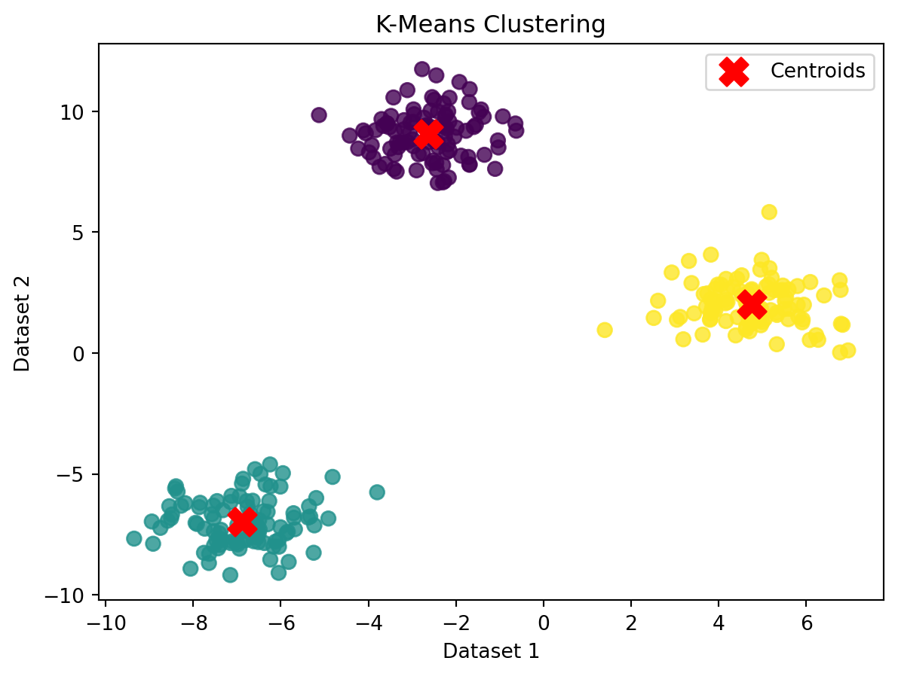
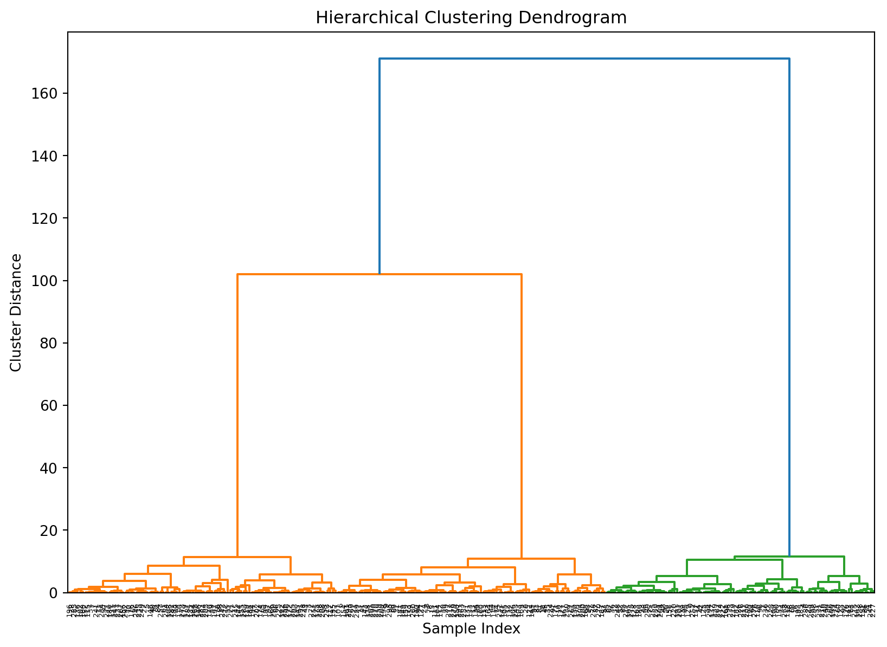
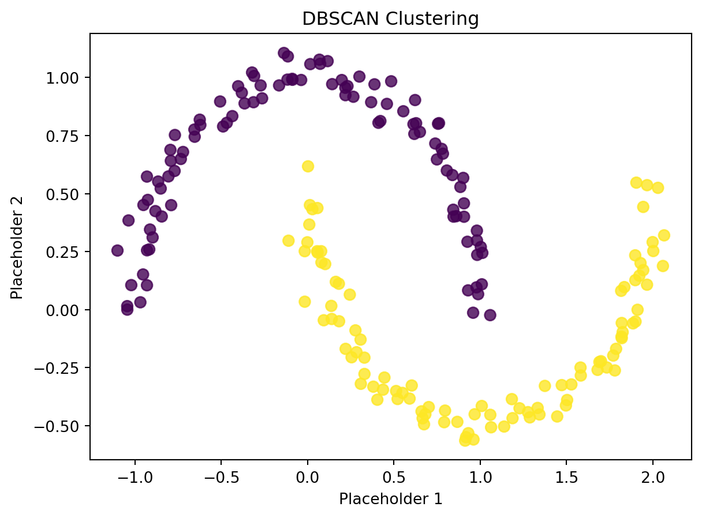
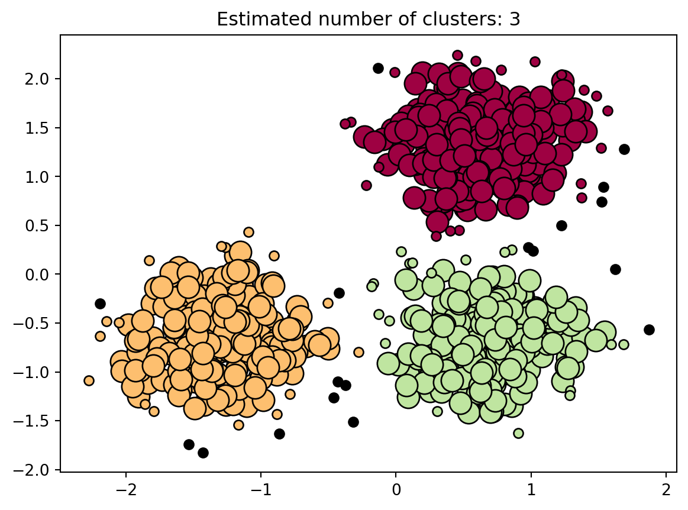

Clustering, a powerful technique in the realm of unsupervised learning, unveils hidden structures within datasets by grouping similar data points. In this exploration, we’ll navigate through the essence of clustering algorithms, their applications, and delve into practical Python examples with sophisticated plots.
Understanding Clustering:
Clustering involves the partitioning of a dataset into groups or clusters, where data points within the same group are more similar to each other than to those in other groups. This unsupervised learning approach is fundamental in various domains, including customer segmentation, image processing, and anomaly detection.
K-Means Clustering: K-Means is a widely used clustering algorithm that partitions data into ‘k’ clusters. Let’s apply K-Means to a synthetic dataset.
Code
import numpy as npimport matplotlib.pyplot as pltfrom sklearn.cluster import KMeansfrom sklearn.datasets import make_blobs# Create a synthetic dataset with three clustersdata, labels = make_blobs(n_samples=300, centers=3, random_state=42)# Apply K-Means clustering with explicit n_initkmeans = KMeans(n_clusters=3, n_init=10, random_state=42)kmeans.fit(data)# Visualize the clustered dataplt.scatter(data[:, 0], data[:, 1], c=kmeans.labels_, cmap='viridis', s=50, alpha=0.8)plt.scatter(kmeans.cluster_centers_[:, 0], kmeans.cluster_centers_[:, 1], c='red', marker='X', s=200, label='Centroids')plt.title('K-Means Clustering')plt.xlabel('Dataset 1')plt.ylabel('Dataset 2')plt.legend()plt.show()

Explanation: The code generates a synthetic dataset with three clusters, applies K-Means clustering, and visualizes the clustered data along with the cluster centroids.
Hierarchical Clustering: Hierarchical Clustering creates a tree-like structure of clusters, allowing for a hierarchy. We’ll use the Agglomerative Clustering algorithm on a sample dataset.
Code
import numpy as npimport matplotlib.pyplot as pltfrom scipy.cluster.hierarchy import dendrogram, linkagefrom sklearn.datasets import make_blobs# Create a synthetic dataset with three clustersdata, labels = make_blobs(n_samples=300, centers=3, random_state=42)# Apply Agglomerative Clusteringlinked = linkage(data, 'ward')# Visualize the hierarchical clusteringplt.figure(figsize=(10, 7))dendrogram(linked, orientation='top', distance_sort='descending', show_leaf_counts=True)plt.title('Hierarchical Clustering Dendrogram')plt.xlabel('Sample Index')plt.ylabel('Cluster Distance')plt.show()

Explanation: The code generates a synthetic dataset, applies Hierarchical Clustering using Ward linkage, and visualizes the hierarchical structure with a dendrogram.
DBSCAN: Density-Based Clustering: Density-Based Spatial Clustering of Applications with Noise (DBSCAN) identifies clusters based on the density of data points. Let’s apply DBSCAN to a dataset with varying cluster densities.
Code
import numpy as npimport matplotlib.pyplot as pltfrom sklearn.cluster import DBSCANfrom sklearn.datasets import make_moons# Create a synthetic dataset with two crescent moon-shaped clustersdata, labels = make_moons(n_samples=200, noise=0.05, random_state=42)# Apply DBSCAN clusteringdbscan = DBSCAN(eps=0.3, min_samples=5)dbscan.fit(data)# Visualize the DBSCAN clusteringplt.scatter(data[:, 0], data[:, 1], c=dbscan.labels_, cmap='viridis', s=50, alpha=0.8)plt.title('DBSCAN Clustering')plt.xlabel('Placeholder 1')plt.ylabel('Placeholder 2')plt.show()

Explanation: The code generates a synthetic dataset with two crescent moon-shaped clusters, applies DBSCAN clustering, and visualizes the clustered data.
Why do we need a Density-Based clustering algorithm like DBSCAN when we already have K-means clustering?
K-Means clustering has the tendency to group loosely related observations together, often resulting in every observation being assigned to a cluster, regardless of its position in the vector space. This is because the formation of clusters relies on the mean value of the cluster elements, causing each data point to contribute to the cluster formation. Consequently, even a slight alteration in data points can significantly impact the clustering outcome, a challenge that is notably mitigated in DBSCAN due to its distinctive cluster formation approach. While this issue is typically not problematic, it becomes more pronounced when dealing with datasets featuring unconventional shapes.
Additionally, a drawback of k-means is the requirement to pre-specify the number of clusters (“k”) before applying the algorithm, a task that can be challenging when the optimal k value is unknown beforehand. DBSCAN alleviates this constraint by eliminating the need for specifying the number of clusters in advance. Instead, it relies on a distance calculation function and a parameter defining what distance is deemed “close.” Notably, DBSCAN consistently yields more sensible results than k-means across various distribution scenarios, making it a favorable choice in scenarios where the number of clusters is not readily apparent.
Density-Based Clustering Algorithms
Density-Based Clustering is like a detective trying to find groups in a crowd without knowing how many groups there are. It looks for areas where there are a bunch of points close together, surrounded by spaces where there are fewer points.
One special detective in this group is called DBSCAN, and it’s good at finding groups of different shapes and sizes in a big pile of data, even if there are some messy or weird points mixed in. DBSCAN uses two important things: the first one is like a rule saying, “Hey, if there are enough points close to each other, let’s call it a group.” The second thing is like a measure of how far we’re willing to look around a point to find its friends.
So, in simple terms, think of Density-Based Clustering as a clever way of finding groups in a sea of data points, and DBSCAN is one of the detectives doing this job, using rules about how many friends points need to have and how far they should look to find them.
DBSCAN relies on two crucial parameters for its operation:
minPts: This parameter represents the minimum number of points required to be clustered together for a specific region to be considered dense, acting as a threshold for cluster formation.
eps (ε): The eps parameter serves as a distance metric, determining the distance used to identify points within the neighborhood of any given point during the clustering process.
Let’s break down these concepts using everyday language. Think of two things: how close one point is to another (that’s Reachability), and if points are kind of linked together (that’s Connectivity).
Reachability just means figuring out if a point is close enough to another. Imagine a circle around a point – if another point is inside that circle, they’re reachable.
Now, Connectivity is like saying, “If point A is close to point B, and point B is close to point C, then maybe A and C are connected too.” It’s like linking points together in a chain. For instance, if you have points p, q, r, s, and t, and they’re all close to each other in a row (like p is close to r, r is close to s, and so on), then we say they’re connected.
Once this detective work is done with DBSCAN clustering, we end up with three types of points:
Core: A Core point is like a popular spot; it’s a point that has at least m other points close enough to it (within distance n).
Border: A Border point is like a neighbor to the popular spot. It might not be as popular itself, but it’s still important because it’s close to at least one Core point (within distance n).
Noise: A Noise point is like the loner in the crowd. It’s not at the center of the action (not a Core), and it’s not right next to a popular spot (not a Border). Plus, it doesn’t have many friends close by (less than m points within distance n).
Algorithmic steps for DBSCAN clustering
The process starts by randomly selecting a point from the dataset, and this continues until all points have been visited.
If there are at least ‘minPoint’ points within a distance of ‘ε’ from the chosen point, we group all these points into the same cluster.
To grow the clusters, the algorithm then repeats the neighborhood calculation recursively for each neighboring point.
Every time we dig into data, we run into the challenge of figuring out some settings. These settings, also known as parameters, have a big say in how our tool (like DBSCAN) works. For DBSCAN, we need to set two specific parameters, which are ε and minPts.
Now, let’s talk about minPts. To decide on a sensible value, we can use a simple trick. We look at how many different aspects or dimensions our data has (let’s call that D), and then we set minPts to be at least D + 1. Setting minPts to 1 doesn’t really work because then every point is seen as a separate group. Keeping minPts at 2 gives us similar results to another method, kind of like cutting a tree diagram at a certain height. So, to avoid confusion and get better groupings, it’s best to go with minPts = 3 or more. If we’re dealing with noisy data or lots of copies, sometimes it’s even better to use larger values like minPts = 2 times the number of dimensions. For really big or noisy data, we might need to go even higher.
Let’s talk about picking values for ε in simple terms. Imagine making a graph that shows how far each point is from its nearest neighbor, but only considering the k closest neighbors (where k is just a number we figured out). We arrange these distances from the biggest to the smallest, and a good ε value is where the graph shows a bend or a corner. If ε is too small, many points won’t join any group. If it’s too big, groups will mush together, and most points end up in one big group. Generally, it’s better to stick with small ε values, and as a simple rule, only a few points should be this close to each other.
Now, let’s chat about the distance function. It’s all about deciding how we measure the distance between points, and this choice links closely with picking ε. Before we can even decide on ε, we need to figure out a sensible way to say when points are kind of similar. There’s no trick to guess this ε thing; we just need to pick a distance measure that fits our data well.
This code generates a make_circles dataset, scales the features, applies DBSCAN clustering, and then plots the clusters. Adjust the parameters like eps and min_samples based on your specific needs and dataset characteristics. Note that DBSCAN assigns points with label -1 as outliers.
Code
import numpy as npfrom sklearn.cluster import DBSCANfrom sklearn import metricsfrom sklearn.datasets import make_blobsfrom sklearn.preprocessing import StandardScaler# Generate sample datacenters = [[1, 1], [-1, -1], [1, -1]]X, labels_true = make_blobs(n_samples=750, centers=centers, cluster_std=0.4, random_state=0)X = StandardScaler().fit_transform(X)# Compute DBSCANdb = DBSCAN(eps=0.3, min_samples=10).fit(X)core_samples_mask = np.zeros_like(db.labels_, dtype=bool)core_samples_mask[db.core_sample_indices_] =Truelabels = db.labels_# Number of clusters in labels, ignoring noise if present.n_clusters_ =len(set(labels)) - (1if-1in labels else0)n_noise_ =list(labels).count(-1)print('Estimated number of clusters: %d'% n_clusters_)print('Estimated number of noise points: %d'% n_noise_)print("Homogeneity: %0.3f"% metrics.homogeneity_score(labels_true, labels))print("Completeness: %0.3f"% metrics.completeness_score(labels_true, labels))print("V-measure: %0.3f"% metrics.v_measure_score(labels_true, labels))print("Adjusted Rand Index: %0.3f"% metrics.adjusted_rand_score(labels_true, labels))print("Adjusted Mutual Information: %0.3f"% metrics.adjusted_mutual_info_score(labels_true, labels))print("Silhouette Coefficient: %0.3f"% metrics.silhouette_score(X, labels))# Plot resultimport matplotlib.pyplot as plt# Black removed and is used for noise instead.unique_labels =set(labels)colors = [plt.cm.Spectral(each)for each in np.linspace(0, 1, len(unique_labels))]for k, col inzip(unique_labels, colors):if k ==-1:# Black used for noise. col = [0, 0, 0, 1] class_member_mask = (labels == k) xy = X[class_member_mask & core_samples_mask] plt.plot(xy[:, 0], xy[:, 1], 'o', markerfacecolor=tuple(col), markeredgecolor='k', markersize=14) xy = X[class_member_mask &~core_samples_mask] plt.plot(xy[:, 0], xy[:, 1], 'o', markerfacecolor=tuple(col), markeredgecolor='k', markersize=6)plt.title('Estimated number of clusters: %d'% n_clusters_)plt.show()
Estimated number of clusters: 3
Estimated number of noise points: 18
Homogeneity: 0.953
Completeness: 0.883
V-measure: 0.917
Adjusted Rand Index: 0.952
Adjusted Mutual Information: 0.916
Silhouette Coefficient: 0.626

Conclusion:
Clustering is a versatile tool for discovering patterns in data, with applications spanning various domains. As showcased through Python examples, K-Means, Hierarchical Clustering, and DBSCAN offer distinct approaches to uncovering hidden structures. These techniques empower data scientists and analysts to gain valuable insights from unlabeled datasets, fostering a deeper understanding of complex data relationships.
Source Code
---title: "3\\. Clustering"author: "M Mubashar Ashraf"date: "2023-11-23"categories: [Clustering, ML]output: html_documentimage: "C.jpg"format: html: code-fold: truejupyter: python3code-fold: truekeep-ipynb: true---## **Introduction:**Clustering, a powerful technique in the realm of unsupervised learning, unveils hidden structures within datasets by grouping similar data points. In this exploration, we'll navigate through the essence of clustering algorithms, their applications, and delve into practical Python examples with sophisticated plots.### **Understanding Clustering:**Clustering involves the partitioning of a dataset into groups or clusters, where data points within the same group are more similar to each other than to those in other groups. This unsupervised learning approach is fundamental in various domains, including customer segmentation, image processing, and anomaly detection.1. **K-Means Clustering:** K-Means is a widely used clustering algorithm that partitions data into 'k' clusters. Let's apply K-Means to a synthetic dataset.```{python}import numpy as npimport matplotlib.pyplot as pltfrom sklearn.cluster import KMeansfrom sklearn.datasets import make_blobs# Create a synthetic dataset with three clustersdata, labels = make_blobs(n_samples=300, centers=3, random_state=42)# Apply K-Means clustering with explicit n_initkmeans = KMeans(n_clusters=3, n_init=10, random_state=42)kmeans.fit(data)# Visualize the clustered dataplt.scatter(data[:, 0], data[:, 1], c=kmeans.labels_, cmap='viridis', s=50, alpha=0.8)plt.scatter(kmeans.cluster_centers_[:, 0], kmeans.cluster_centers_[:, 1], c='red', marker='X', s=200, label='Centroids')plt.title('K-Means Clustering')plt.xlabel('Dataset 1')plt.ylabel('Dataset 2')plt.legend()plt.show()```*Explanation:* The code generates a synthetic dataset with three clusters, applies K-Means clustering, and visualizes the clustered data along with the cluster centroids.2. **Hierarchical Clustering:** Hierarchical Clustering creates a tree-like structure of clusters, allowing for a hierarchy. We'll use the Agglomerative Clustering algorithm on a sample dataset.```{python}import numpy as npimport matplotlib.pyplot as pltfrom scipy.cluster.hierarchy import dendrogram, linkagefrom sklearn.datasets import make_blobs# Create a synthetic dataset with three clustersdata, labels = make_blobs(n_samples=300, centers=3, random_state=42)# Apply Agglomerative Clusteringlinked = linkage(data, 'ward')# Visualize the hierarchical clusteringplt.figure(figsize=(10, 7))dendrogram(linked, orientation='top', distance_sort='descending', show_leaf_counts=True)plt.title('Hierarchical Clustering Dendrogram')plt.xlabel('Sample Index')plt.ylabel('Cluster Distance')plt.show()```*Explanation:* The code generates a synthetic dataset, applies Hierarchical Clustering using Ward linkage, and visualizes the hierarchical structure with a dendrogram.3. **DBSCAN: Density-Based Clustering:** Density-Based Spatial Clustering of Applications with Noise (DBSCAN) identifies clusters based on the density of data points. Let's apply DBSCAN to a dataset with varying cluster densities.```{python}import numpy as npimport matplotlib.pyplot as pltfrom sklearn.cluster import DBSCANfrom sklearn.datasets import make_moons# Create a synthetic dataset with two crescent moon-shaped clustersdata, labels = make_moons(n_samples=200, noise=0.05, random_state=42)# Apply DBSCAN clusteringdbscan = DBSCAN(eps=0.3, min_samples=5)dbscan.fit(data)# Visualize the DBSCAN clusteringplt.scatter(data[:, 0], data[:, 1], c=dbscan.labels_, cmap='viridis', s=50, alpha=0.8)plt.title('DBSCAN Clustering')plt.xlabel('Placeholder 1')plt.ylabel('Placeholder 2')plt.show()```*Explanation:* The code generates a synthetic dataset with two crescent moon-shaped clusters, applies DBSCAN clustering, and visualizes the clustered data.## Why do we need a Density-Based clustering algorithm like DBSCAN when we already have K-means clustering?K-Means clustering has the tendency to group loosely related observations together, often resulting in every observation being assigned to a cluster, regardless of its position in the vector space. This is because the formation of clusters relies on the mean value of the cluster elements, causing each data point to contribute to the cluster formation. Consequently, even a slight alteration in data points can significantly impact the clustering outcome, a challenge that is notably mitigated in DBSCAN due to its distinctive cluster formation approach. While this issue is typically not problematic, it becomes more pronounced when dealing with datasets featuring unconventional shapes.Additionally, a drawback of k-means is the requirement to pre-specify the number of clusters ("k") before applying the algorithm, a task that can be challenging when the optimal k value is unknown beforehand. DBSCAN alleviates this constraint by eliminating the need for specifying the number of clusters in advance. Instead, it relies on a distance calculation function and a parameter defining what distance is deemed "close." Notably, DBSCAN consistently yields more sensible results than k-means across various distribution scenarios, making it a favorable choice in scenarios where the number of clusters is not readily apparent.### Density-Based Clustering AlgorithmsDensity-Based Clustering is like a detective trying to find groups in a crowd without knowing how many groups there are. It looks for areas where there are a bunch of points close together, surrounded by spaces where there are fewer points.One special detective in this group is called DBSCAN, and it's good at finding groups of different shapes and sizes in a big pile of data, even if there are some messy or weird points mixed in. DBSCAN uses two important things: the first one is like a rule saying, "Hey, if there are enough points close to each other, let's call it a group." The second thing is like a measure of how far we're willing to look around a point to find its friends.So, in simple terms, think of Density-Based Clustering as a clever way of finding groups in a sea of data points, and DBSCAN is one of the detectives doing this job, using rules about how many friends points need to have and how far they should look to find them.DBSCAN relies on two crucial parameters for its operation:1. **minPts:** This parameter represents the minimum number of points required to be clustered together for a specific region to be considered dense, acting as a threshold for cluster formation.2. **eps (ε):** The eps parameter serves as a distance metric, determining the distance used to identify points within the neighborhood of any given point during the clustering process.Let's break down these concepts using everyday language. Think of two things: how close one point is to another (that's Reachability), and if points are kind of linked together (that's Connectivity).Reachability just means figuring out if a point is close enough to another. Imagine a circle around a point -- if another point is inside that circle, they're reachable.Now, Connectivity is like saying, "If point A is close to point B, and point B is close to point C, then maybe A and C are connected too." It's like linking points together in a chain. For instance, if you have points p, q, r, s, and t, and they're all close to each other in a row (like p is close to r, r is close to s, and so on), then we say they're connected.Once this detective work is done with DBSCAN clustering, we end up with three types of points:- Core: A Core point is like a popular spot; it's a point that has at least m other points close enough to it (within distance n).- Border: A Border point is like a neighbor to the popular spot. It might not be as popular itself, but it's still important because it's close to at least one Core point (within distance n).- Noise: A Noise point is like the loner in the crowd. It's not at the center of the action (not a Core), and it's not right next to a popular spot (not a Border). Plus, it doesn't have many friends close by (less than m points within distance n).### Algorithmic steps for DBSCAN clustering- The process starts by randomly selecting a point from the dataset, and this continues until all points have been visited.- If there are at least 'minPoint' points within a distance of 'ε' from the chosen point, we group all these points into the same cluster.- To grow the clusters, the algorithm then repeats the neighborhood calculation recursively for each neighboring point.Every time we dig into data, we run into the challenge of figuring out some settings. These settings, also known as parameters, have a big say in how our tool (like DBSCAN) works. For DBSCAN, we need to set two specific parameters, which are ε and minPts.- Now, let's talk about minPts. To decide on a sensible value, we can use a simple trick. We look at how many different aspects or dimensions our data has (let's call that D), and then we set minPts to be at least D + 1. Setting minPts to 1 doesn't really work because then every point is seen as a separate group. Keeping minPts at 2 gives us similar results to another method, kind of like cutting a tree diagram at a certain height. So, to avoid confusion and get better groupings, it's best to go with minPts = 3 or more. If we're dealing with noisy data or lots of copies, sometimes it's even better to use larger values like minPts = 2 times the number of dimensions. For really big or noisy data, we might need to go even higher.- Let's talk about picking values for ε in simple terms. Imagine making a graph that shows how far each point is from its nearest neighbor, but only considering the k closest neighbors (where k is just a number we figured out). We arrange these distances from the biggest to the smallest, and a good ε value is where the graph shows a bend or a corner. If ε is too small, many points won't join any group. If it's too big, groups will mush together, and most points end up in one big group. Generally, it's better to stick with small ε values, and as a simple rule, only a few points should be this close to each other.- Now, let's chat about the distance function. It's all about deciding how we measure the distance between points, and this choice links closely with picking ε. Before we can even decide on ε, we need to figure out a sensible way to say when points are kind of similar. There's no trick to guess this ε thing; we just need to pick a distance measure that fits our data well.```{python}import numpy as npimport matplotlib.pyplot as pltfrom sklearn.cluster import DBSCANfrom sklearn.datasets import make_circlesfrom sklearn.preprocessing import StandardScaler# Create make_circles datasetX, _ = make_circles(n_samples=750, factor=0.3, noise=0.1)X = StandardScaler().fit_transform(X)# Apply DBSCANdbscan = DBSCAN(eps=0.3, min_samples=10)y_pred = dbscan.fit_predict(X)# Plot the clustersplt.scatter(X[:, 0], X[:, 1], c=y_pred, cmap='viridis', edgecolors='k')plt.title('DBSCAN Clustering')plt.xlabel('Sec 1')plt.ylabel('Sec 2')plt.show()```This code generates a make_circles dataset, scales the features, applies DBSCAN clustering, and then plots the clusters. Adjust the parameters like **`eps`** and **`min_samples`** based on your specific needs and dataset characteristics. Note that DBSCAN assigns points with label -1 as outliers.```{python}import numpy as npfrom sklearn.cluster import DBSCANfrom sklearn import metricsfrom sklearn.datasets import make_blobsfrom sklearn.preprocessing import StandardScaler# Generate sample datacenters = [[1, 1], [-1, -1], [1, -1]]X, labels_true = make_blobs(n_samples=750, centers=centers, cluster_std=0.4, random_state=0)X = StandardScaler().fit_transform(X)# Compute DBSCANdb = DBSCAN(eps=0.3, min_samples=10).fit(X)core_samples_mask = np.zeros_like(db.labels_, dtype=bool)core_samples_mask[db.core_sample_indices_] =Truelabels = db.labels_# Number of clusters in labels, ignoring noise if present.n_clusters_ =len(set(labels)) - (1if-1in labels else0)n_noise_ =list(labels).count(-1)print('Estimated number of clusters: %d'% n_clusters_)print('Estimated number of noise points: %d'% n_noise_)print("Homogeneity: %0.3f"% metrics.homogeneity_score(labels_true, labels))print("Completeness: %0.3f"% metrics.completeness_score(labels_true, labels))print("V-measure: %0.3f"% metrics.v_measure_score(labels_true, labels))print("Adjusted Rand Index: %0.3f"% metrics.adjusted_rand_score(labels_true, labels))print("Adjusted Mutual Information: %0.3f"% metrics.adjusted_mutual_info_score(labels_true, labels))print("Silhouette Coefficient: %0.3f"% metrics.silhouette_score(X, labels))# Plot resultimport matplotlib.pyplot as plt# Black removed and is used for noise instead.unique_labels =set(labels)colors = [plt.cm.Spectral(each)for each in np.linspace(0, 1, len(unique_labels))]for k, col inzip(unique_labels, colors):if k ==-1:# Black used for noise. col = [0, 0, 0, 1] class_member_mask = (labels == k) xy = X[class_member_mask & core_samples_mask] plt.plot(xy[:, 0], xy[:, 1], 'o', markerfacecolor=tuple(col), markeredgecolor='k', markersize=14) xy = X[class_member_mask &~core_samples_mask] plt.plot(xy[:, 0], xy[:, 1], 'o', markerfacecolor=tuple(col), markeredgecolor='k', markersize=6)plt.title('Estimated number of clusters: %d'% n_clusters_)plt.show()```## **Conclusion:**Clustering is a versatile tool for discovering patterns in data, with applications spanning various domains. As showcased through Python examples, K-Means, Hierarchical Clustering, and DBSCAN offer distinct approaches to uncovering hidden structures. These techniques empower data scientists and analysts to gain valuable insights from unlabeled datasets, fostering a deeper understanding of complex data relationships.